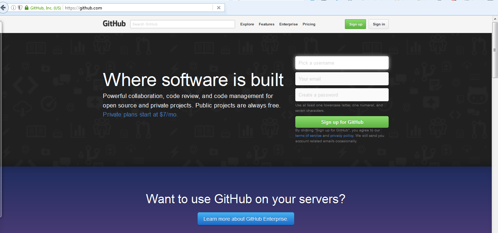

HERRAMIENTAS DE DESARROLLO
Conceptos básicos
Created by @edme88 & rmarku
Tipos de Herramientas
- IDE
- Sistema de Control de Versiones
- Bug Tracker
- Pruebas de desempeño, carga, stress
- Documentación

Ambiente de Desarrollo Integrado o IDE
Es un software que proporciona servicios integrales para facilitarle al programador el desarrollo de software.
Ambiente de Desarrollo Integrado o IDE
Normalmente, un IDE consiste de:
- Editor de código fuente
- Herramientas de construcción automáticas
- Depurador
- Compilador
- Intérprete
IDE's
Ejemplos de IDE's para desarrollo Web:
- Eclipse
- Net Beans
- JetBrains Web Storm
- Aptana
- Dreamweaber
- Microsoft Visual Studio Express for Web
- Sublime Text
- NotePad ++
IDE's
No hay mejor IDE que aquel que cumpla con tus expectativas y supla tus necesidades y requerimientos.
Gestión de Versiones o VCS
Permiten gestionarlos archivos de un proyecto (y sus versiones) y que sus integrantes puedan acceder remotamente a ellos.
Gestión de Versiones o VCS
Los usuarios pueden:
- Descargar los archivos
- modificar archivos
- Publicar cambios
- Volver a versiones anteriores
- Ramificar a partir de una versión
- Aplicar cambios de distintas versiones
Ventajas de VCS
- Permite llevar cuenta de los cambios de un conjunto de archivos digitales en el tiempo
- Cada versión registrada en el tiempo es una revisión
- Permite tanto a un desarrollador como a un grupo de desarrolladores, gestionar el código del proyecto.
Herramientas de VCS
- Git
- SVN
- Mercurial
- Bazaar
Git
- Sistema distribuido de control de versiones
- Libre
- Crea branches y hace merge rapido y facil
- Cada "Clón" es un repositorio completo

Git: Servidores
- Github
- Bitbucket
Creación de Cuenta en GitHub
Los 3 estados + Untraking
- Unmodified(confirmado) los datos estan almacenados de manera segura en el repositorio
- Modified(modificado) Se ha modificado el archivo pero todavía no se ha confirmado
- Staged(preparado)se ha marcado para confirmación el archivo en su version actual
Los 3 estados + Untraking

Commit
- Identificadores numéricos de 40bytes
- Identificación de la persona que realizo el commit (nombre y mail)
- Fecha del commit
- Mensaje de texto asociado al commit (comentario personal de los cambios)


Terminología
- Repositorio: Colección de todas las referencias, base de datos, objetos y una copia de trabajo.
- Commit: Es una foto del proyecto en un tiempo determinado.
- Branch (rama): Linea de desarrollo del proyecto
- Tag (etiqueta): Una etiqueta a un commit en particular
- Ref o referencia: Cadena de 40 bytes que representa una version/commit.
- Merge: Mezcla codigo de 2 ramas
Software para VCS
- GitHub for windows
- Tortoise
- SourceTree (BitBucket)
- Linea de Comandos
Documentación de Código
Permite:
- Entener que se está haciendo y porqué
- Mantener el código
Niveles de Documentación
- por clase:descripcion,autor,fecha y ultima modificacion
- por método:descricpion del objeto, funcionalidades, parametros y resultados
- de variables: que sean importantes o difíciles de entender
- de limitaciones
- de algoritmos implementados
Formato de Documentación
/**
* @fileoverview Libreria con funciones de utilidad
* @author jose
* @version 0.1
*/
/**
* Muestra un mensaje de texto
* @param {String} metodo nombre del metodo
* @param {String} mensaje mensaje a mostrar
* @returns {integer} el codigo de retorno 0
*/
function trazas(metodo,mensaje){
alert("["+metodo+"]:"+mensaje);
return 0;
}
Documentación...A tener en cuenta
- No uses solo una linea, dividela en parrafos para que sea mas legible
- Tabular los comentarios de lineas consecutivas
- No comentar obviedades
- Se profesional (No insultes o coloques frases fuera de contexto)
- Revisa la ortografia
- No comentes si no es necesario
- Comentarios simple y directo
- Documenta mientras desarrollas
- Manten los comentarios actualizados